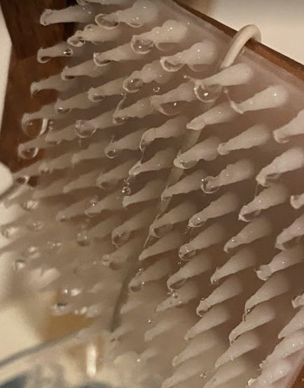

|
Furkan Turan Koyun I'm a master's student in Software Engineering (AI/ML focus) in İzmir, Turkey, with dual bachelor's degrees in Mechanical Engineering and Textile Engineering (both completed with first-class honors). My work centers on Large Language Models (LLMs), retrieval-augmented generation (RAG), parameter-efficient fine-tuning (PEFT: LoRA/IA3), and multimodal mechanism reasoning for engineering design and manufacturing. I’ve contributed to projects in AI-assisted design, SAP guidance with RAG, and experimental 3D-printed smart surfaces for atmospheric water harvesting. I’m currently preparing PhD applications and building PEFT + RAG experiments for engineering Q&A and documentation workflows. |

|
ResearchMy goal is to integrate AI with mechanical engineering, robotics, and design workflows to build practical systems. Building on experience in mechanical design, nanofibers/membranes, and 3D printing, I now focus on leveraging LLMs and multimodal AI for engineering reasoning. Focus areas include: Robotics & Mechanical Systems; Multimodal AI for Engineering; Prompt Engineering & Robustness; NLP for technical docs; RAG; and LoRA/PEFT. |
PublicationsSelected work below. For the full list see Google Scholar. |
|  |
Innovative 3D-Printed Surfaces for Efficient Water Harvesting from Air
F. T. Koyun, S. Sabur, G. Başal, H. Günerhan International Journal of Clothing Science and Technology, 2024 paper Design and experimental validation of 3D-printed smart surfaces that capture water from fog/condensation. |

|
Generative AI and LLM Chatbots in Medical Applications
F. T. Koyun, T. Çalışkan, A. Onan, S. Ö. Korkut Work in progress, 2025 Use cases, risks, and evaluation frameworks for generative AI assistants in healthcare settings. |

|
The Effect of Prompt Engineering on the Performance of Large Language Models in Engineering and Design Tasks
F. T. Koyun Work in progress, 2025 Prompt design vs. LLM performance on engineering tasks: multimodal mechanism reasoning, industrial RAG, and LoRA/PEFT. |
ProjectsA few recent projects and demos. |

|
RAG for SAP Transaction Assistance
industrial demo paper / code / project Lightweight retrieval + prompt engineering for operator guidance; optimized for latency and accuracy. |

|
Microsoft Sustainability Manager – SAP Integration
industrial project product link Led SAP module integration with Microsoft Sustainability Manager for automated carbon data tracking and reporting. |

|
Mobile Psychology App (Contributor)
mobile • shipped app Collaborated with psychologists to explore and test personalized LLM chat features (name intentionally omitted). |

|
Electric Vehicle Design Project
competition • concept design Conceptual high-efficiency EV. Led mechanical design, chassis/suspension layout and basic aero studies in SolidWorks & ANSYS. |
|
|